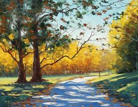
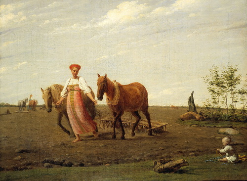
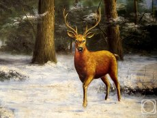
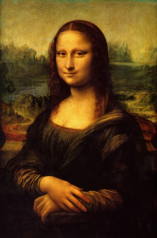
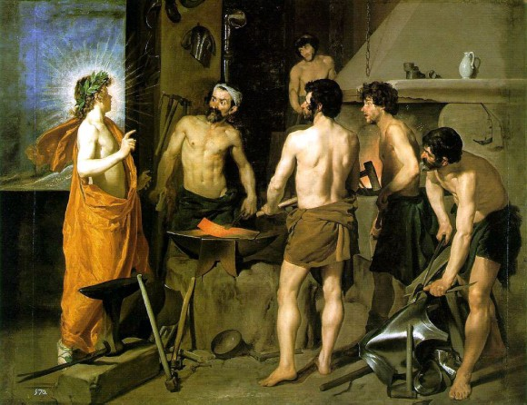
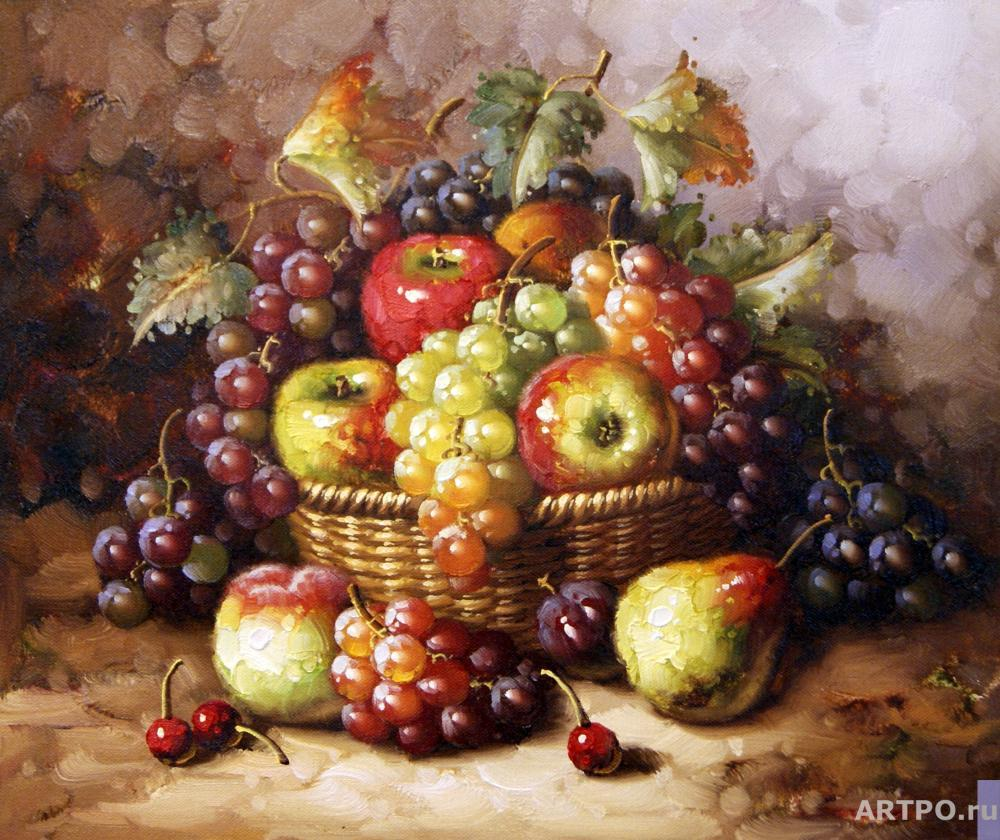
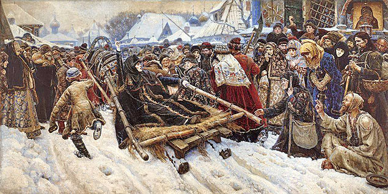
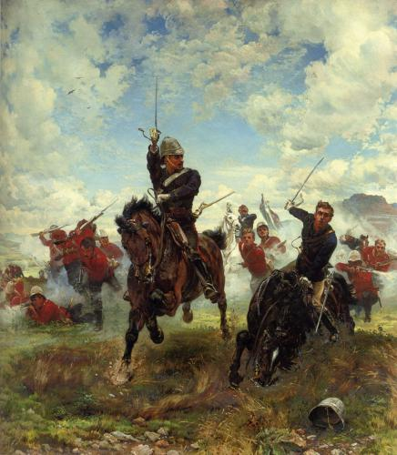

Исторический жанр
| Жанры живописи: |
В России исторический жанр получил дальнейшее развитие в XVIII—XIX вв. и был связан с появлением светского искусства, исторической науки, просветительскими идеями и классицизмом, пропагандистом которого выступала Академия художеств. Ведущая роль принадлежала большой по размерам тематической картине (А. Лосенко, Г. Угрюмов, А. Иванов, К. Брюллов).
Скульптурные портреты и памятники, посвященные событиям Отечественной войны 1812 года, создавались в рамках исторического жанра.
Выдающимся мастером исторической живописи был В. Суриков, отразивший в своих полотнах яркие исторические события, героические национальные характеры, полную внутренних противоречий историю русского народа: «Утро стрелецкой казни» (1881), «Боярыня Морозова» (1887), «Покорение Сибири Ермаком» (1895), «Переход Суворова через Альпы» (1899).
С конца XIX — начала XX вв. борющиеся за гуманистические идеалы художники в произведениях исторического жанра отразили события многих революций, борьбу с фашизмом и трагические события освободительных движений современности.
| Жанры живописи: |
|---|---|---|
|  Пейзаж |  Бытовой | |
| Анималистический |  Портрет | |
|  Мифологический |  Натюрморт | |
|  Исторический |  Батальный |